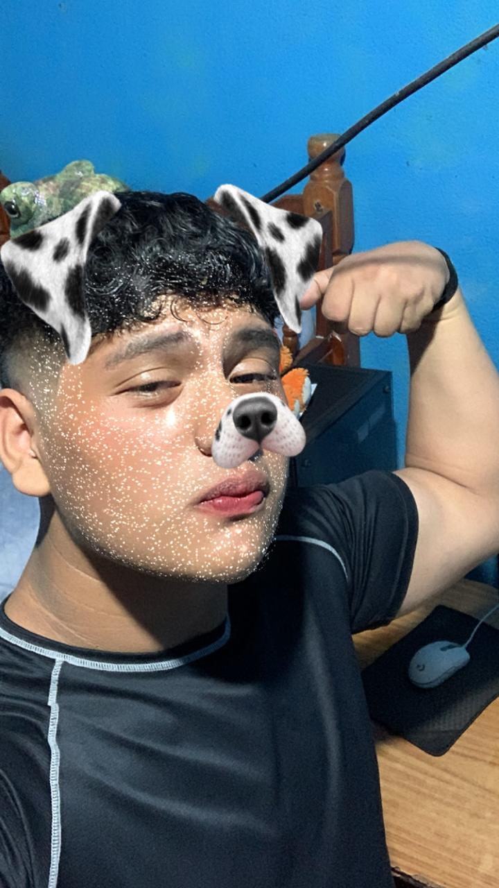

PROYECTO DE VIDA
Quién soy
Carlos Daniel Antony Romeo Castañeda Gonzalez
Edad: 17 Años
Ocupación: Actualmente cursando el grado de 5to bachillerato en computación con orientación en científica, y siendo contador para la empresa de mis tíos.
Sobre mí: Un hijo de Dios, una persona que le tocó vivir solo en varios aspectos, alguien que le gusta apoyar y escuchar a las personas, divertido y chistoso.
Grado: 5to Bachillerato en Computación
Materia: Seminario